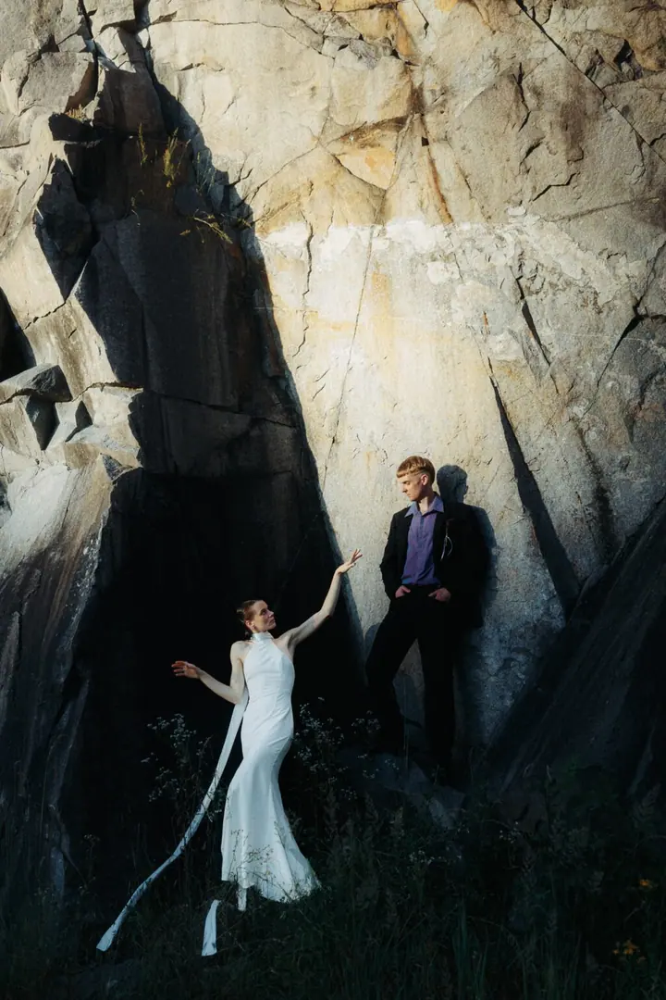
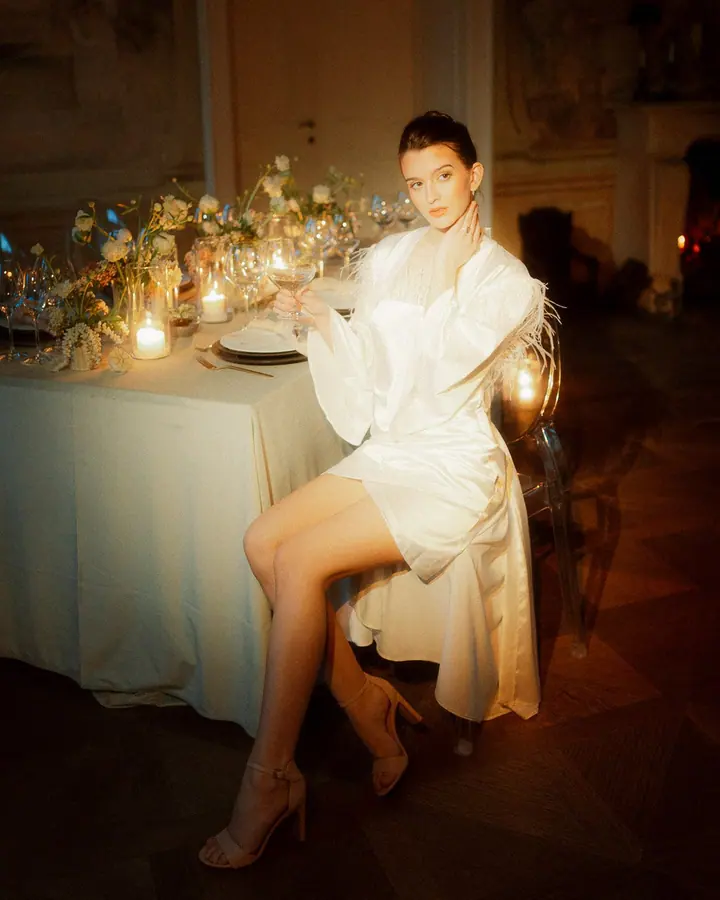
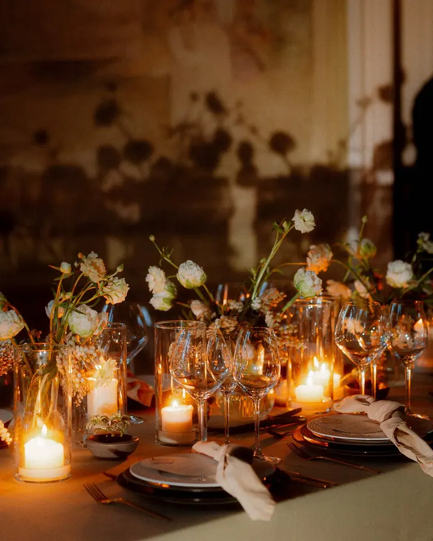

jedna
Svatební focení
Svatby jsou moje hlavní specializace a ideální spojení dokumentu a kreativní tvorby. Bydlím v Praze, ale na vaši oslavu rád dorazím kamkoli.


Jmenuji se Michael Fraňo a fotím svatby a páry v Praze, Bratislavě i kdekoli, kam mě pozvete. Mám rád netradiční fotky s filmovou atmosférou, ve kterých se potkává dokument s editoriálem.
Více o mně
Co fotím
jedna
Svatby jsou moje hlavní specializace a ideální spojení dokumentu a kreativní tvorby. Bydlím v Praze, ale na vaši oslavu rád dorazím kamkoli.
dvě
Pokud se chcete ve svatební den naplno věnovat hostům, nafotíme portréty v jiný den. Bude na ně víc času a méně stresu.
Párové focení nejraději fotím v Praze, kterou dobře znám, ale vyrazím s vámi i na místo, které je blízké vašemu srdci. Společně vybereme outfity a lokace a fotíme hodinu až dvě.
Atmosféra, emoce a trochu filmu


Za objektivem
Svatby jsou moje hlavní specializace, protože v nich můžu spojit dokumentování s kreativní tvorbou. Fotím je s atmosférou a emocemi a snažím se, aby každá svatba měla svůj vlastní příběh i barvy. Pro každý pár hledám tematické odstíny, které pak používám na všechny fotky, a přitom zůstávám věrný svému stylu.
Žiji v Praze, ale rád cestuji, a ještě radši za svatbou. Fotím v Česku i na Slovensku, od Košic až po Reykjavík. Na svatbu přijíždím aspoň o hodinu dřív, abych si v klidu vybalil, přivítal se s vámi a prohlédl si místo.
Všechno dělám na 140 %, proto i předsvatební rande pečlivě plánujeme. A černobílou mám prostě rád, proto téměř všechny fotky dostanete i ve vyladěné černobílé verzi. Počet svateb za rok je u mě omezený, a tak se ozvěte včas.
Michael
Vyplňte formulář, pošlete e-mail nebo rovnou zavolejte. Ozvu se vám nejpozději do 24 hodin.
Probereme, v čem bude vaše svatba jedinečná a jak do ní zapadnu já. Podrobnosti a ceník vám pošlu.
Přijedu aspoň o hodinu dřív a fotím na dva foťáky se zálohou na dvou kartách, aby se nic neztratilo.
Do 3 dnů vám pošlu ochutnávku nejlepších fotek a kompletní galerii dostanete do 10 týdnů od svatby.
Portfolio
Otázky
Z celodenní svatby odevzdám minimálně 400 fotek, průměrně kolem 550. Předám vám je v online galerii, odkud si je můžete stáhnout, sdílet i nechat vytisknout.
Jasně, umím být všude, od Košic až po Reykjavík. Rád cestuji, a ještě radši za svatbou.
Každá fotka projde korekcí a barevnou úpravou a téměř všechny dostanete i v černobílé verzi. Retuš, tedy vyhlazení pleti nebo vyžehlení oblečení, není v základní ceně a domluvíme se na ní předem.
Průměrně u mě svatební pár utratí 55 tisíc korun. Předsvatební rande začíná na 10 000 Kč a pokud spolu fotíme i svatbu, máte na něj slevu.

Napište pár vět o tom, co si představujete. · +420 775 657 613